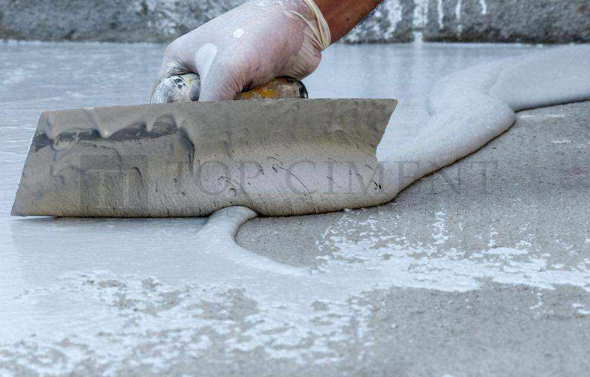

Aplicación de microcemento de preparación y de acabado
El microcemento es un revestimiento que se aplica en varias capas, hay que distinguir dos tipos de material según su función: microcemento de preparación que es el primero que se emplea y sirve para acondicionar el soporte y el microcemento de acabado es el que dará el aspecto final. Dentro de los microcementos de terminación existen texturas diferentes: Microfino, Microdeck, Microstone y Aquaciment M. Cada material tienes sus particularidades y herramientas para trabajarlo.
Microcemento de preparación:
Aplicación de Microbase o en piscinas, AquacimentXL
Se aplicará en dos manos mediante llana de acero en capas de 1 milímetro como
máximo.
Siempre debemos respetar las proporciones de mezcla de la guía rápida.
Dejar secar 24 horas entre mano y mano. Lijar cada mano para eliminar las irregularidades con una lija
de grano 40. Si esperamos demasiado tiempo, este trabajo será más costoso. Si dejamos la superficie
irregular, dificultaremos la aplicación de la siguiente mano dejando marcas en el revestimiento.
Dejar secar 24 horas antes de aplicar el microcemento de acabado

Microcemento de acabado:
Aplicación de Microfino
Aplicaremos Microfino sobre Microbase en una o dos manos, con llana de goma o de acero flexible según el efecto decorativo deseado. Siempre debemos respetar las proporciones de mezcla de la guía rápida.
Dejar secar 3 horas entre cada mano. Lijar manualmente o con lijadora roto-orbital con lijas de 120 a 220. Si lijamos el mismo día de la aplicación del microcemento fino, el mortero estará todavía fresco, utilizaremos lijas de grano 220. Si lijamos al día siguiente, el revestimiento estará más duro y emplearemos lija de grano 120. No superar un espesor de aplicación por capa de 0,3 mm para el Microfino.

Aplicación de Microdeck
Aplicaremos Microdeck sobre Microbase en dos manos, con llana de acero flexible.
Siempre debemos respetar las proporciones de mezcla de la guía rápida.
Antes de la aplicación de la segunda mano, esperar 3 h. el secado de la anterior y efectuar un leve
lijado. Lijar manualmente o con lijadora roto-orbital con lijas de grano 80. No superar un espesor
de aplicación por capa de 0,5 mm para el Microdeck. Se recomienda un espesor total de sistema de 2 a
3 mm.

Aplicación de Microstone
Aplicaremos Microstone sobre Microbase en dos manos, con llana de acero flexible. Para este tipo
de aplicación será suficiente preparar el soporte con una mano de Microbase. Siempre debemos
respetar las proporciones de mezcla de la guía rápida. Emplearemos lija de grano 40
para eliminar las irregularidades.
No superar un espesor de aplicación por capa de 1 mm para el Microstone. Se recomienda un espesor
total de sistema de 2 a 3 mm.

Aplicación de Aquaciment
Aquaciment M se aplican sobre Aquaciment XL en dos manos, con llana de acero flexible. Siempre debemos respetar las proporciones de mezcla de la guía rápida.
Emplearemos lija de grano 80 para eliminar las irregularidades.
No superar un espesor de aplicación por capa de 1 mm para el Aquaciment. Se recomienda un espesor total de sistema de 2 a 3 mm.